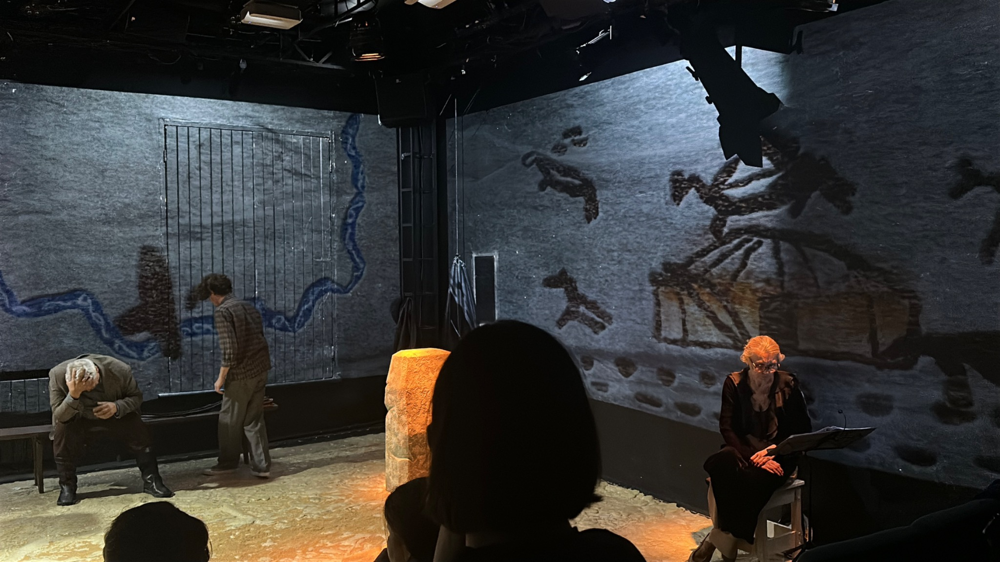

Белый пароход
РАМТ · Черная комната
режиссер Юрий Печенежский
художник-постановщик Леша Лобанов
2025
Видеохудожник
режиссер Юрий Печенежский
художник-постановщик Леша Лобанов
2025
Видеохудожник

О проекте
Камерный спектакль, в котором проекция формирует стены и среду сценического пространства.
Страница проекта ↗Фрагмент видеоконтентаkk_kitkate
Фрагмент видеоконтентаkk_kitkate
РАМТ · Черная комната · 2025
Все проекты →